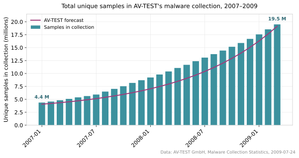
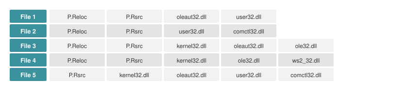
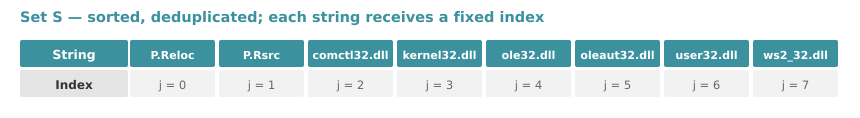
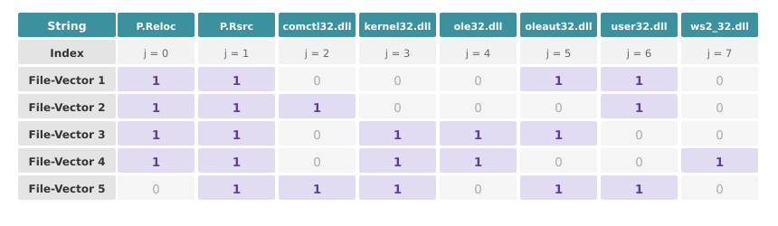
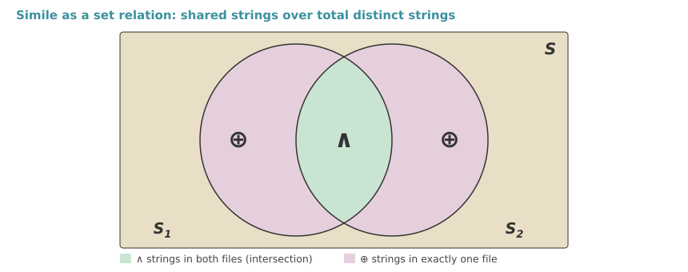
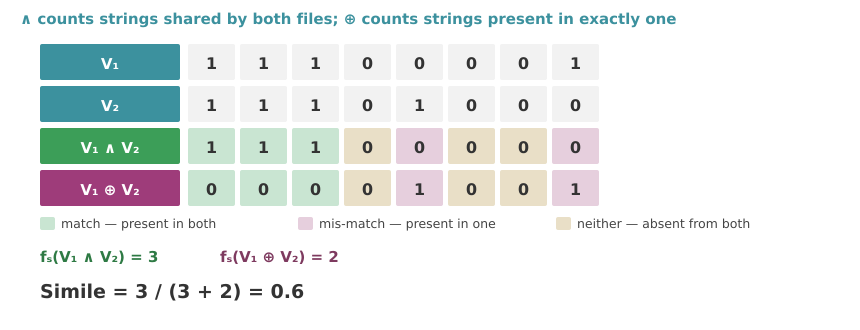
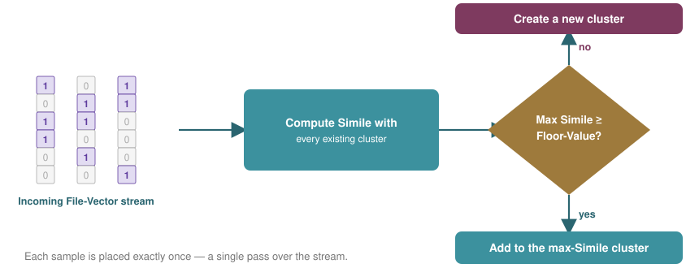
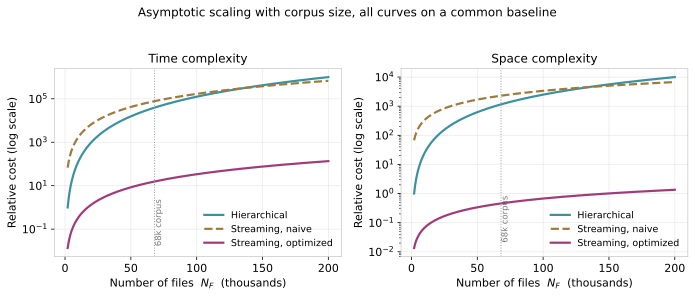
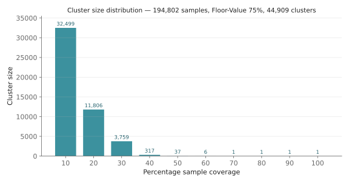
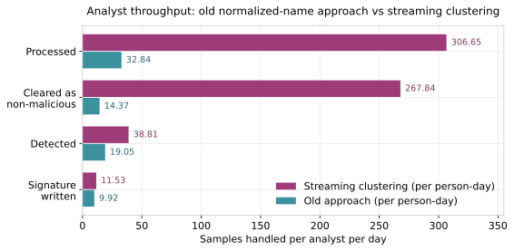

Scaling Malware Analysis: A Streaming Clustering Method Reducing Computation from 9 Hours to 12 Minutes
A retrospective account of work I did in one of my previous roles on large-scale malware clustering, subsequently granted as a US patent.
1 The problem
1.1 Exponential growth in malware volume
In the late 2000s, the anti-malware industry faced a submission rate that substantially exceeded its analysis capacity. Novel malware samples, together with a continuous stream of variants derived from existing families, arrived faster than human analysts could examine them. The scale of the increase is documented in the AV-TEST Institute’s collection statistics, which record an average monthly growth rate of 9.5% over this period (Figure 1). This growth produced three consequences:
- Processing time increased — each sample required individual analysis, and analyst capacity did not scale with submission volume.
- Definition content expanded — each newly identified threat required an additional signature to be distributed to customers.
- Scan durations lengthened — larger signature databases increased scan time on every protected endpoint.

The conventional practice of authoring one signature per sample was therefore not scalable, and a fundamentally different formulation of the problem was required.
1.2 Redundancy among samples
The governing observation is that not all samples exhibit unique behavior. The majority of newly submitted malware consists of variants of previously observed specimens: repacked, modified, or lightly mutated instances of the same underlying families.
This redundancy motivates an alternative strategy: rather than analyzing every sample individually, group samples exhibiting similar behavior into clusters, analyze a single representative from each cluster, and infer the behavior of the remaining members by extension. A single generic signature can then be authored to detect the entire cluster. One signature then provides the coverage previously requiring hundreds, reversing each of the three consequences above.
1.3 Why not hierarchical clustering?
The conventional choice for a task of this shape is hierarchical agglomerative clustering. Each item begins as its own cluster; the closest pair is merged; the process repeats until a stopping criterion is met. It is well understood, requires no advance specification of the number of clusters, and produces a dendrogram from which groupings may be cut at any desired granularity. Its complexity, however, is prohibitive at this scale.
For N_F files, hierarchical clustering requires the full pairwise similarity matrix:
- Space complexity: O(N_F^2). All pairwise similarities are retained, since any pair may become the next merge candidate.
- Time complexity: O(N_F^3) for the naive formulation, reducible to O(N_F^2 \log N_F) with priority-queue variants. Every merge alters the distances from the new cluster to all others, so similarities are recomputed repeatedly.
The quadratic space term is the decisive obstacle. At N_F = 194{,}802, the pairwise matrix contains approximately 1.9 \times 10^{10} entries, requiring on the order of 75 GB at four bytes per entry before any file content is stored. The cubic time term compounds this: doubling the corpus increases the work eightfold.
A second objection is structural. Hierarchical clustering is inherently a batch method: the complete corpus must be present before clustering begins, and the arrival of new samples requires re-clustering from the start. Given a submission stream of millions of samples per year, a method requiring full recomputation on each arrival is unusable irrespective of its complexity.
These two objections, quadratic memory and batch operation, motivate the streaming formulation described in the remainder of this post.
2 The method: streaming clustering
2.1 Method overview
The method rests on a single feature source: the ASCII strings contained within the files themselves. Malware samples encode a substantial degree of identity in their embedded strings, including DLL names, API identifiers, file paths, registry entries, URLs, packer artifacts, and compiler fingerprints. Variants belonging to a common family typically share a large proportion of this string content.
The processing pipeline comprises three stages:
String extraction. All ASCII strings are extracted from every sample and consolidated into an exhaustive set of unique strings, S (Figure 2).

Figure 2: Representative ASCII strings extracted per file, comprising section names and imported DLL names, which constitute the shared residue characteristic of variants. Sorting and deduplicating the extracted strings yields the set S. Each member is assigned a fixed index j as per its position in the sorted order (Figure 3).

Figure 3: The unique string set S, with the index assigned to each member. File-Vector construction. A File-Vector is a binary vector of length \left| S \right| and represents the subset of the string set S present in its corresponding file. As each string is assigned a unique index in the previous step, a 1 or 0 at each index denotes the presence or absence of the corresponding string in that file (Figure 4).

Figure 4: The same five files as binary File-Vectors, over the columns of S established above. The file clustering problem is thereby reduced to a vector clustering problem.
Cluster generation. The resulting vectors are streamed into the clustering algorithm sequentially.
As with any clustering scheme, three components are required: the items to be clustered (File-Vectors), a similarity measure (designated Simile), and a cutoff threshold (the Floor-Value).
2.2 Simile: a similarity measure between two files
Simile is a correlation measure defined on the interval [0, 1]. It is defined as the number of strings present in both files (the intersection) divided by the number of unique strings present in either file (the union), and is therefore equivalent to the Jaccard index computed over the corresponding string sets. Writing S_1 and S_2 for the string sets of the two files:
\boxed{\,\text{Simile} = \frac{\left| S_1 \cap S_2 \right|}{\left| S_1 \cup S_2 \right|}\,} \tag{1}
The union may be decomposed as the intersection plus the elements belonging to exactly one of the two sets, which gives the equivalent form:
\text{Simile} = \frac{\left| S_1 \cap S_2 \right|}{\underbrace{\left| S_1 \cap S_2 \right|}_{\text{in both files}} + \underbrace{\left\{ \left| S_1 \cup S_2 \right| - \left| S_1 \cap S_2 \right| \right\}}_{\text{in exactly one file}}}
The denominator is now a sum of two quantities that are directly countable:
- The first, \left| S_1 \cap S_2 \right|, is the number of strings present in both files. This is the green region of Figure 5, and it is identical to the numerator.
- The second, \left| S_1 \cup S_2 \right| - \left| S_1 \cap S_2 \right|, is the number of strings present in exactly one of the two files. This is the pair of rose regions.
On File-Vectors, each quantity is one bitwise operation: AND (\wedge), which yields 1 only where both operands are 1, marks the first; XOR (\oplus), which yields 1 only where the operands differ, marks the second. Writing f_s for the function returning the sum of a vector’s elements, the measure for two vectors V_1 and V_2 becomes:
\boxed{\,\text{Simile}(V_1, V_2) = \frac{f_s(V_1 \wedge V_2)}{f_s(V_1 \wedge V_2) + f_s(V_1 \oplus V_2)}\,} \tag{2}

On a binary vector, f_s returns the count of its 1’s, conventionally the Hamming weight or population count, which on modern hardware is a single instruction. For two 8-bit vectors sharing 3 strings and differing in 2 positions, \text{Simile} = \frac{3}{3+2} = 0.6 (Figure 6).

2.3 Simile between a file and a cluster
Pairwise similarity is insufficient on its own, since the streaming algorithm must compare an incoming vector against entire clusters. The definition is therefore extended: the Simile between a vector and a cluster pools the pairwise counts across the members — total shared strings over total compared strings. For a cluster C containing N File-Vectors \{C_1, \ldots, C_N\}:
\boxed{\,\text{Simile}(V, C) = \frac{\displaystyle\sum_{i=1}^{N} f_s(V \wedge C_i)}{\displaystyle\sum_{i=1}^{N} f_s(V \wedge C_i) + \sum_{i=1}^{N} f_s(V \oplus C_i)}\,} \tag{3}
where C_i denotes the i-th File-Vector in the cluster and N the cluster cardinality. The pooled form preserves the range [0, 1], reduces to Equation 2 for N = 1, and reflects all of the cluster’s members rather than the single closest one. It is a weighted mean of the pairwise Similes: writing u_i = f_s(V \wedge C_i) + f_s(V \oplus C_i) for the number of strings in the union of V and C_i, the definition equals \sum_i u_i\, \text{Simile}(V, C_i) \,/\, \sum_i u_i, so member i carries the weight w_i = u_i / \sum_j u_j — its share of all compared strings. A member that shares more compared strings carries more evidence and counts proportionally more, whereas an equal-weight arithmetic mean would give a three-string member the same vote as a three-thousand-string one. The pooled form is also what collapses into the constant-size per-cluster summary that the optimizations below exploit; the equal-weight mean admits no summary smaller than the member list itself.
2.4 The streaming algorithm
The clustering procedure operates as a single pass over the incoming stream of File-Vectors. For each new vector:
- Compute the Simile against every existing cluster.
- If the maximum Simile is greater than or equal to the Floor-Value, assign the vector to the corresponding cluster.
- Otherwise, instantiate a new cluster with this vector as its sole initial member.
The procedure requires no iteration, no re-clustering, and no retention of the full pairwise distance matrix in memory. Each sample is assigned exactly once, which is the defining property of the streaming formulation and the principal reason it remains tractable at industrial scale (Figure 7).

3 Optimizations
3.1 Inherent computational complexity
Notwithstanding the simplicity of the algorithm, a naive implementation proves computationally prohibitive. With N_F files, N_C clusters, and N_S = \left| S \right| unique strings:
- Space complexity: O(N_F \times N_S), since the complete vector for every file is retained in memory.
- Time complexity: O(N_F^2 \times N_S), since each incoming vector is compared against all others, traversing the full vector length in every comparison.
For a representative workload of 68,000 files and 135,000 unique strings, these bounds correspond to approximately 2 GB of memory and 9 hours of computation. A workload of this size could be completed by allocating sufficient hardware to it, but not at a cost proportionate to its value, and not on the daily cadence that production operation required.
3.2 Binary representation and complexity reduction
The reduction in complexity derives from exploiting the binary representation of File-Vectors through three successive optimizations. All three are exact: none alters the resulting clustering, only the computational and memory cost of obtaining it.
3.2.1 Optimization 1: discard if poor
This optimization applies to clusters containing exactly one File-Vector. Prior to computing a full Simile between a new vector and a singleton cluster, a less expensive question is posed: what is the maximum Simile the pair could attain? Since the 1-count f_s(V) of each vector is recorded once at construction time, an upper bound is obtained at negligible cost.
Dividing numerator and denominator by the intersection term yields:
\text{Simile}(V_1, V_2) = \frac{f_s(V_1 \wedge V_2)}{f_s(V_1 \wedge V_2) + f_s(V_1 \oplus V_2)} = \frac{1}{1 + \dfrac{f_s(V_1 \oplus V_2)}{f_s(V_1 \wedge V_2)}}
Simile attains its maximum when the \wedge term is as large as possible and the \oplus term as small as possible. Given only the 1-counts, the extremal cases are:
f_s(V_1 \wedge V_2)_{\max} = \min\big(f_s(V_1),\, f_s(V_2)\big) \qquad \text{(one string set wholly contained in the other)}
f_s(V_1 \oplus V_2)_{\min} = \big|\, f_s(V_1) - f_s(V_2) \,\big| \qquad \text{(only the surplus strings differ)}
Substituting both bounds, and assuming f_s(V_2) \le f_s(V_1) without loss of generality:
\text{Simile}(V_1, V_2)_{\max} = \frac{1}{1 + \dfrac{f_s(V_1) - f_s(V_2)}{f_s(V_2)}}
Simplifying,
\boxed{\,\text{Simile}(V_1, V_2)_{\max} = \frac{f_s(V_2)}{f_s(V_1)}\,} \tag{4}
The maximum attainable Simile is therefore the ratio of the smaller 1-count to the larger, computable in constant time without vector traversal. If \text{Simile}_{\max} < \text{Floor-Value}, the full computation is omitted. This single test eliminated approximately 30% of all Simile computations.
3.2.2 Optimization 2: N_F \rightarrow N_C
The second optimization is algebraic. The cluster Simile Equation 3 already aggregates the pairwise counts into summations, but evaluated as written it still requires accessing every member vector individually — each term traverses one member. Expanding \oplus into its two one-sided differences, namely strings in V but not in C_i and strings in C_i but not in V:
\text{Simile}(V, C) = \frac{\sum_{i} f_s(V \wedge C_i)}{\sum_{i} f_s(V \wedge C_i) + \sum_{i} f_s(V \wedge \overline{C_i}) + \sum_{i} f_s(\overline{V} \wedge C_i)}
Consider now the sequence of operations. Each term evaluates: \wedge \rightarrow f_s \rightarrow summation over members. Because the vectors are binary, this sequence admits reordering to: summation over members \rightarrow multiplication \rightarrow count. This is an instance of the sum of products versus product of sums equivalence, and the reordering is justified by the distributive law of multiplication over addition,
x\,y_1 + x\,y_2 + \cdots + x\,y_N \;=\; x\,(y_1 + y_2 + \cdots + y_N)
applied independently at each string index j, in conjunction with the interchange of the two finite summations, which is permitted by the commutativity and associativity of addition. Noting further that for binary vectors \wedge is identical to element-wise multiplication:
\sum_{i=1}^{N} f_s(V \wedge C_i) \;=\; \sum_{i=1}^{N} \sum_{j} V[j]\, C_i[j] \;=\; \sum_{j} V[j] \sum_{i=1}^{N} C_i[j] \;=\; f_s\!\left(V \cdot \sum_{i=1}^{N} C_i\right)
where \sum_i C_i denotes the element-wise sum of all member vectors, that is, a single vector of per-string membership counts, and the product is evaluated index by index. Here f_s is read as the component sum, f_s(x) = \sum_j x[j] — on binary vectors this coincides with the Hamming weight, while V \cdot \sum_i C_i is in general integer-valued. The same rewriting applies to every term, so the complete cluster Simile may be expressed solely in terms of the two summation vectors:
\boxed{\,\text{Simile}(V, C) = \frac{f_s\!\left(V \cdot \sum_i C_i\right)}{f_s\!\left(V \cdot \sum_i C_i\right) + f_s\!\left(V \cdot \sum_i \overline{C_i}\right) + f_s\!\left(\overline{V} \cdot \sum_i C_i\right)}\,} \tag{5}
The consequence is that computing the Simile against a cluster requires no access to the individual member vectors. Retaining only two summation vectors per cluster, \sum_i C_i (the One_Count vector) and \sum_i \overline{C_i} (the Zero_Count vector), is sufficient. The resulting complexity bounds are:
- Space: O(N_F \times N_S) \rightarrow \mathbf{O(N_C \times N_S)}
- Time: O(N_F^2 \times N_S) \rightarrow \mathbf{O(N_C \times N_F \times N_S)}
Since the number of clusters was substantially smaller than the number of files, this was a considerable improvement, though memory did not fall proportionately: on the 68,000-file workload, N_C was observed to be approximately N_F/3.
3.2.3 Optimization 3: sparse matrix
The final improvement follows from a property of the data: the strings present in any single cluster constitute a small subset of the exhaustive string set S, so the One_Count vector \sum_i C_i is highly sparse, with a measured density of approximately 0.06%. Retaining only its non-zero values therefore offers a substantial saving.
One obstacle remained: the rewritten formula from Optimization 2 also requires the Zero_Count vector \sum_i \overline{C_i}, which is by construction dense precisely where One_Count is sparse. The algebra was therefore extended one step further, proceeding again from that form:
\text{Simile}(V, C) = \frac{f_s\!\left(V \cdot \sum_i C_i\right)}{f_s\!\left(V \cdot \sum_i C_i\right) + f_s\!\left(V \cdot \sum_i \overline{C_i}\right) + f_s\!\left(\overline{V} \cdot \sum_i C_i\right)}
The first two denominator terms may be combined, since the element-wise sum \sum_i C_i + \sum_i \overline{C_i} is a vector containing N at every index, each member contributing a 1 to exactly one of the two terms. Denoting this vector V_N:
f_s\!\left(V \cdot \sum_i C_i\right) + f_s\!\left(V \cdot \sum_i \overline{C_i}\right) = f_s(V \cdot V_N) = N \cdot f_s(V)
which reduces the expression to its final form:
\boxed{\,\text{Simile}(V, C) = \frac{f_s\!\left(V \cdot \sum_i C_i\right)}{N \cdot f_s(V) + f_s\!\left(\overline{V} \cdot \sum_i C_i\right)}\,} \tag{6}
The dense Zero_Count vector has been eliminated: N is a single integer per cluster and f_s(V) is already available. Every remaining term references only \sum_i C_i, and any index at which it holds a zero contributes nothing to the summations. A linked-list sparse representation storing only non-zero values therefore reduces both memory consumption and computation time.
3.2.4 The result
The combined effect of the three optimizations on the same 68,000-file workload was as follows:
- Memory: approximately 2 GB reduced to approximately 20 MB, a factor of 100.
- Time: approximately 9 hours reduced to approximately 12 minutes, a factor of 45.
The output is unchanged. All three optimizations are exact, so the clustering produced after them is identical to the clustering produced before. What changed is the cost of obtaining it, which is what determines whether the method can be run daily on a growing corpus rather than occasionally on a favourable one.
4 Results and comparison
4.1 Comparison with hierarchical clustering
Streaming clustering addresses both of the objections raised earlier. Each sample is examined once and assigned immediately, so no pairwise matrix is ever formed and no re-clustering occurs. The cost is a known trade-off: the result depends on the order of arrival, and an assignment once made is never revisited, so the partition is not guaranteed optimal in the sense a hierarchical method would provide. In this application that trade-off is acceptable, since the objective is to group samples closely enough to support a shared generic signature, not to recover a canonical taxonomy (Figure 8).
| Hierarchical | Streaming (naive) | Streaming (optimized) | |
|---|---|---|---|
| Space | O(N_F^2) | O(N_F \times N_S) | O(N_C \times N_S), sparse |
| Time | O(N_F^3) | O(N_F^2 \times N_S) | O(N_C \times N_F \times N_S), sparse |
| Passes over the data | Many | One | One |
| Accepts new samples incrementally | No | Yes | Yes |
| Measured on 68,000 files | Not feasible | ≈ 2 GB, ≈ 9 hours | ≈ 20 MB, ≈ 12 minutes |

4.2 Experimental evaluation
The system was evaluated on a corpus of 194,802 samples with a Floor-Value of 75%. The procedure produced well-populated groupings: the largest cluster contained 32,499 samples, just 403 clusters lay entirely within the first half of the covered samples, and the full set resolved into 44,909 clusters. The observed cluster quality supports the central hypothesis: string-based similarity captures family relationships among malware variants to a degree sufficient both for generic signature construction and for disposing of non-malicious clusters in bulk (Figure 9).

The operational effect was evident in analyst throughput. Relative to the preceding normalized-name approach, streaming clustering enabled a single analyst to process nearly ten times as many samples per day (approximately 307 against 33). The largest gain was in clearing samples as non-malicious, which rose from approximately 14 to 268 per day, since an entire cluster determined to be clean could be dispensed with in a single decision. In one such case, analysis of 15 clean or disputed clusters cleared 64,120 samples (Figure 10).

4.2.1 Detections per signature
The clearest measure of the method’s value is the number of detections obtained per signature authored. Across the malicious clusters, signatures fell into two categories. Where cluster coherence permitted a hand-written generic signature, one signature covered a large number of samples. Where it did not, samples were covered in bulk by script-generated automated signatures, each of which covers essentially one sample.
| Nature of signatures | Clusters | Signatures | Detections | Detections per signature |
|---|---|---|---|---|
| Generic | 10 | 28 | 8,719 | 307.43 |
| Automated | 4 | 1,525 | 1,557 | 1.02 |
Twenty-eight generic signatures produced 8,719 detections, while 1,525 automated signatures produced 1,557: a comparable order of detections from roughly one fifty-fourth as many signatures, or 307 detections per signature against 1.02. This is the mechanism by which the method attacks all three consequences identified at the outset. Detections protect the customer; signatures occupy the definition file and lengthen every scan. Raising the ratio between them increases coverage while holding definition content approximately constant.
Several qualifications arise from operational experience:
- The method successfully clustered many files processed with unsupported packers, as the residual strings remained discriminative.
- Installer files constituted the principal weakness, with cluster quality varying considerably.
- Execution over sample sets restricted to malicious files yielded the highest-quality generic signatures.
- String extraction became the limiting stage of the pipeline, processing approximately 10,000 files per hour.
4.3 Relation to existing work
The ingredients are long-established. Binary presence/absence vectors compared by the Jaccard index are the classic set-of-words model from information retrieval, applied to near-duplicate document detection at web scale since the late 1990s [1], [2]. The clustering schema is Hartigan’s Leader algorithm [3]: assign each arriving item to its best-matching cluster if a threshold is met, otherwise start a new one, carrying the same two limitations noted earlier, order dependence and threshold sensitivity. This work arrived at both independently, from the constraints of the problem; given presence/absence features, a corpus too large to hold pairwise, and a stream that does not stop, the design space is narrow.
Contemporaneous malware work reached the same objective by a different route. BitShred [4] also computes Jaccard similarity over bit vectors, but reduces dimensionality by feature hashing, trading a bounded error rate for fixed-size fingerprints; MutantX-S [5] applied the same trick to million-dimensional n-gram vectors and then clustered hierarchically over prototypes rather than over all samples. Complementary work addressed the downstream step rather than this one: Griffin et al. [6] automated the generation of string signatures for samples already known to be malicious and already grouped into families, taking as input the clusters that a method like this one produces.
The contribution here is therefore neither the representation nor the clustering schema, but the exact algebraic reduction that makes their combination tractable: expressing cluster-level similarity through summation vectors so that member vectors need never be retained, then eliminating the dense complement term so that sparsity can be exploited. Where the hashing approaches trade accuracy for scale, this route preserves the exact result.
4.4 Patent disclosure and citation impact
The method described here was filed with the USPTO and granted in 2013.
It has since accumulated 69 forward citations, placing it in roughly the 92nd to 94th percentile among the approximately 8,000 US malware and malicious-software patents filed around that time. Citing organisations include Palo Alto Networks, Cisco, McAfee, and CrowdStrike, indicating that string-based clustering has remained an established technique within malware analysis.
Citation count and peer cohort are both taken from PatSnap; the percentile is an estimate obtained by fitting a log-normal distribution to that cohort, the standard approach in the patent citation literature.
5 Conclusions
Two properties of this work merit emphasis. The first is efficiency: the final complexity is what separates a research prototype from a system that can run in production daily. The second is generality: no component of the core algorithm is specific to malware, and the method applies wherever strings can serve as representative features of an item, including documents, logs, and binaries of any kind.
The broader conclusion is that when a problem appears computationally intractable, the remedy is more often a better representation than more hardware. A binary encoding, an algebraic reordering of operations, and the exploitation of sparsity were together sufficient here.
How to cite
If you found this useful, please cite as:
@misc{aja2026clustering,
title = {Scaling Malware Analysis: A Streaming Clustering Method Reducing Computation from 9 Hours to 12 Minutes},
author = {Aja S.},
year = {2026},
url = {https://aja-ekapada.github.io/clustering/}
}References
Glossary
The following domain terms are used throughout this post and are defined here for readers outside the security industry.
Malware — any malicious software, including viruses, worms, Trojan horses, and spyware. The term is a contraction of malicious software.
Malware sample — a single, uniquely identifiable copy of a malware specimen, typically an executable file collected in the wild and submitted to a security vendor for analysis.
Variant / family — malware authors seldom write code from scratch, instead modifying, repacking, or mutating existing code. The resulting related versions are termed variants, and the group to which they belong a family. This redundancy is the property that clustering exploits.
Signature — a pattern, such as a hash or byte sequence, by which an antivirus engine recognizes a known malware specimen. Conventionally, one signature detected one sample.
Generic signature — a single signature constructed to detect an entire cluster or family of related samples rather than one specific file. Achieving broader coverage with fewer signatures is the principal objective of this work.
Definition content — the signature database distributed to customers by an antivirus product and updated periodically. Its size directly affects download bandwidth, disk consumption, and the duration of a scan, the process of evaluating a machine’s files against it.
Static strings — human-readable text embedded within an executable file, including DLL names, API names, file paths, registry entries, and URLs. The term static indicates that they are read directly from the file without executing it.
Packer — a utility that compresses or encrypts an executable, frequently employed by malware authors to obscure their code. Packed files are more difficult to analyze, although residual strings often persist.
Cleared as non-malicious — an analyst triage outcome in which a sample is determined to be clean, corrupt, or otherwise not a threat, and is therefore dispensed with without a signature being written. Referred to internally as junking.
Signature written — a sample for which a detection signature has been authored and distributed to customers, so the product will thereafter recognise it. Referred to internally as a sample having been deffed, from definition.
False positive — an erroneous match between a signature and a benign file. This is the principal constraint on generic signature construction: coverage must be broad without extending to legitimate software.